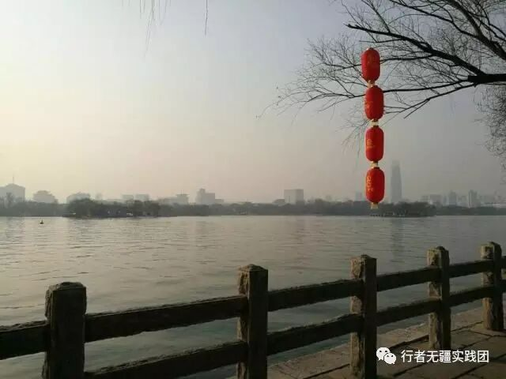
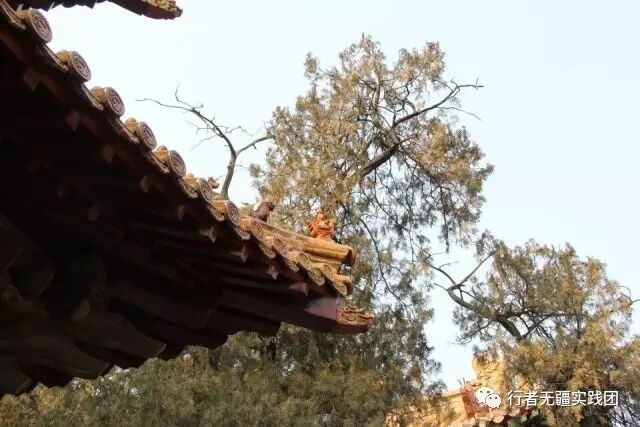

来自行者的第九封信|山东之行
山东之行

文：孙仪晨
本人虽然不是山东人，但是爱好旅行，也喜欢了解各个国家地区的文化。所以我很期待这次的实践，了解了齐鲁文化的基本情况，也从我们团队做的推送中了解到许多这次活动重点调研的方向。我是抱着学习和了解一座城市的热情开始这趟调研之旅的。
下了火车到济南的那一刻，给我感觉并不是很陌生。就如其他许多城市一般，但是我记得那天的天气很好，阳光很耀眼。这与我对山东省的印象不是很相像，来之前我会每天关注济南的天气，前几天空气质量还不是很好，这样的天气会让人莫名的心情好，我想我们的这次实践一定会非常顺利。稍事整顿后，我们便开始了济南的调研。
我们一行人先后去到了泉城广场，趵突泉，千佛山，大明湖等济南最著名的地方。这些地方是济南文化集中的体现。


我印象最深的就是千佛山。从正门进入千佛山，可见一条笔直的大路通向大佛，路的两侧是十八罗汉的石雕，每个石雕下面都有关于这个罗汉的简介。这些罗汉就像在迎客，每个罗汉形态各异，仿佛看着他们的神态就能看出这个罗汉的性格一般。
路的尽头是一尊卧佛，有许多信奉佛教的人会在这里驻足，对着佛像许下心愿，给佛祖上香，我观察到他们一个个虔诚的模样，并没有上前，但我也在一旁许下我的心愿。沿着小路就可以看见一尊高耸的观音佛像，沿着观音身边的小路往里走就能看见闪闪发光的弥勒佛，观音就像是在守护者弥勒佛一样。我们到达的时间正好是中午，阳光正好照在了大佛的头上，站在正面看弥勒佛他的身后事闪闪发光的，真的像是显现真身的佛祖一般。
本来我是个没有信仰的，自然不信这些佛家道教的说法，但是今天见到这尊弥勒佛虽然他是乐呵呵的样子，但是却有一种威严在那，让去拜访的人们都无言的瞻仰他的威严。


我们还观赏了济南闻名的趵突泉，泉城广场，见到了冬天也喷涌而出的泉水，这些都让济南成为名副其实的“泉城”。还有济南最著名的大明湖，平静的湖面让人完全的沉静下来。
之后我们还去到了孔子的故乡——曲阜，走在圣人生活的土地，让我也有一种荣誉感，曲阜缓慢的生活节奏让人待着非常安逸。参观“三孔”，听导游讲述一切和孔子，文化有关的故事，便是此次旅行收获最大的一部分。

这次实践之旅给我带来的影响，不仅是了解了山东的文化，也让我对山东充满了亲切的感觉，回家之后听到有关于山东的消息都会觉得熟悉，也会去关注济南，曲阜这些地方。他们已经不仅仅是新闻中出现的一个地名，而是我自己的一份经历，我也会继续保持这份亲切的感觉。希望能再次去到山东，用不同的心境再次感受山东文化。
行者酱祝大家 元宵节快乐呦~
那么，你今天吃的是汤圆，还是元宵呢？